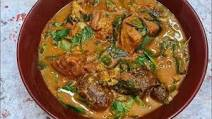
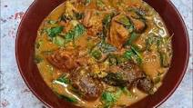

The name of my favourite meal is Oha soup and Poundo yam
Oha soup is a Nigerian delicacy from the South Eastern region, it takes it's name from the leaf used in the preparation of the soup; the oha leaf(Pterocarpus mildraedii). the oha leaf is often also referred to as "ora" in some igbo dialect. This soup is a staple dish in many Nigerian homes and is usually accommpanied by a variety of complementing swallow e.g garri(eba), fufu, semo pounded/poundo yam etc.
| S/n | Ingredients | Measurement |
|---|---|---|
| 1 | Oha leaves | A small bunch |
| 2 | Uziza leaves | A small bunch |
| 3 | Cocoyam/Achi | 500g/2tbs |
| 4 | Beef,Turkey or any preferred protein | 1.2kg |
| 5 | Dry fish | 2 pieces |
| 6 | Stock fish | 3 pieces |
| 7 | Ground crayfish | 1-2 tbs |
| 8 | Ogiri igbo(local spice) | 1-2 tbs |
| 9 | Seasoning cubes | 4 |
| 10 | Habenero peppers | 4 large bulbs |
| 11 | Salt | 1 tbs or to taste |
| 12 | Palm oil | 1/2 cup |
| 13 | Onions | 1 small bulb |
| 14 | water/meat stock | |
| 15 | Yam | 1 small tuber |


 
